5 Digital Imaging
5.1 From Photons to Pixels: The Detection Chain
A fluorescence microscope is a photon counting instrument. Understanding the detection chain — from photon arrival at the sensor to the final pixel value — is essential for interpreting images quantitatively and designing experiments correctly.
5.2 CCD Cameras
A scientific CCD (charge-coupled device) camera consists of a photodiode array, thermoelectric cooling (Peltier), and readout electronics. Cooling reduces dark current (thermal electron generation), which is a major noise source in long exposures.
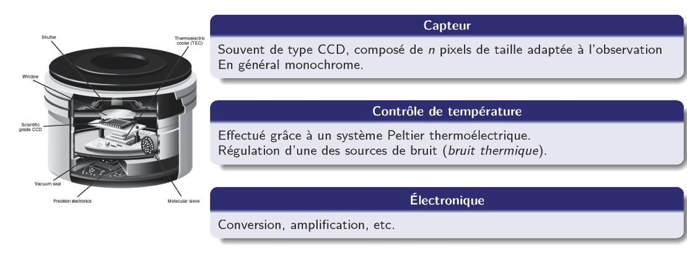
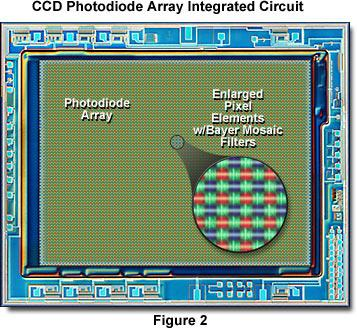
5.2.1 Charge Transfer Principle
In a CCD, photoelectrons generated in each pixel are shifted along the sensor column by column to a single readout amplifier, using a sequence of clocked voltage gates on a p-Si substrate:
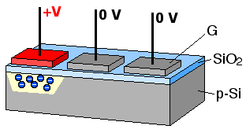
The key consequence: all pixels share a single amplifier, so read noise is added only once per frame. This gives CCDs an excellent read noise floor (\(\sim 2\)–\(5\,e^-\) for scientific CCDs), critical for low-light fluorescence imaging.
5.3 sCMOS Cameras
Scientific CMOS (complementary metal-oxide-semiconductor) sensors have largely replaced CCDs in modern fluorescence microscopy. Each pixel has its own amplifier, enabling parallel readout of all pixels simultaneously:
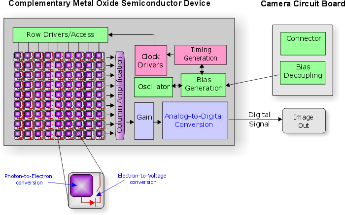
5.4 CCD vs. sCMOS
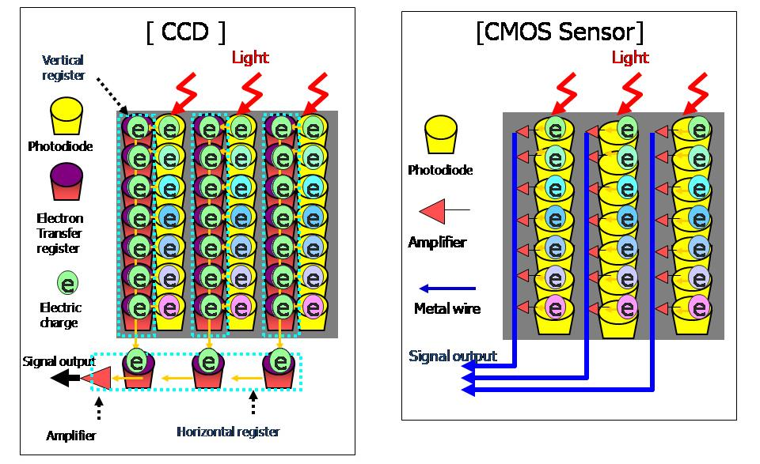
The key trade-offs:
| CCD | sCMOS | |
|---|---|---|
| Read noise | \(\sim 2\)–\(5\,e^-\) | \(\sim 1\)–\(2\,e^-\) |
| Frame rate | Moderate | Very high |
| Field of view | Moderate | Large |
| Dynamic range | High | High |
| Cost | Higher | Decreasing |
sCMOS cameras now offer superior performance for most applications, with per-pixel noise maps allowing correction of pixel-to-pixel amplifier variation.
5.5 Digital Image: Bit Depth and Dynamic Range
The analog signal from the amplifier is digitized by an ADC (analog-to-digital converter). The bit depth determines how many gray levels are available:
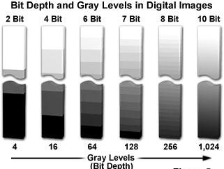
Dynamic range is the ratio of the maximum signal (full-well capacity) to the minimum detectable signal (noise floor). For quantitative imaging, you need sufficient bit depth to sample this range without losing information at either end.
5.6 Noise Sources
The total noise in a fluorescence image has three main contributions:
Photon shot noise (\(\sigma_{\text{shot}} = \sqrt{N}\)): fundamental, follows Poisson statistics. Unavoidable — it arises from the quantum nature of light. Signal-to-noise ratio scales as \(\sqrt{N}\), so collecting more photons always helps.
Read noise (\(\sigma_{\text{read}}\)): added by the amplifier during readout. Fixed per pixel per frame — reduced by cooling and by sCMOS architecture.
Dark current (\(i_d\)): thermally generated electrons accumulated during exposure. Proportional to exposure time; dramatically reduced by Peltier cooling (\(\sim 2\times\) reduction per 7°C decrease in temperature).
The total noise in quadrature: \[\sigma_{\text{total}}^2 = N_{\text{signal}} + N_{\text{background}} + \sigma_{\text{read}}^2 + i_d \cdot t\]
5.7 Objectives and Numerical Aperture
The objective is the most critical optical element in the microscope. Its numerical aperture (NA) determines both light collection efficiency and lateral resolution:
\[\mathrm{NA} = n \sin\mu\]
where \(n\) is the refractive index of the immersion medium and \(\mu\) is the half-angle of the acceptance cone.
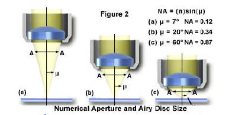
Light collection scales as \(\mathrm{NA}^2\), so going from NA 0.5 to NA 1.4 gives nearly \(8\times\) more photons per pixel — a massive practical advantage.
5.8 Resolution: The Airy Disc and Rayleigh Criterion
A point source imaged through a circular aperture produces an Airy diffraction pattern — a bright central disc surrounded by concentric rings. Two point sources are considered resolved (Rayleigh criterion) when the central maximum of one coincides with the first minimum of the other:
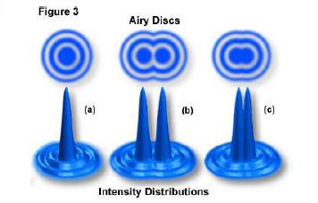
The lateral resolution (Rayleigh criterion) is:
\[R_{xy} = \frac{1.22\,\lambda}{2\,\mathrm{NA}} = \frac{0.61\,\lambda}{\mathrm{NA}}\]
For a typical oil-immersion objective (NA = 1.4) at \(\lambda = 500\,\mathrm{nm}\): \[R_{xy} \approx \frac{0.61 \times 500\,\mathrm{nm}}{1.4} \approx 218\,\mathrm{nm}\]
The Airy intensity pattern is formally: \[I(P) = I_{\max}\left[\frac{J_1(ka\sin\theta)}{ka\sin\theta}\right]^2\]
where \(J_1\) is the first-order Bessel function, \(k = 2\pi/\lambda\), and \(a\) is the aperture radius.
5.9 Reading an Objective
All key specifications are encoded on the objective barrel:
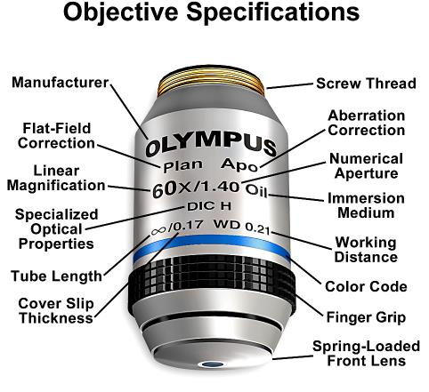
Aberration correction classes (in increasing order of correction): - Achromat: corrected for chromatic aberration at 2 wavelengths - Plan: flat-field correction (no field curvature) - Apochromat (Apo): corrected at 3–4 wavelengths, highest chromatic correction - Plan Apo: both flat-field and full chromatic correction — the gold standard for fluorescence
5.10 Aberrations
5.10.1 Chromatic Aberration
Different wavelengths focus at different axial positions due to the wavelength dependence of the refractive index. This causes color fringing and z-offset between channels in multicolor imaging.
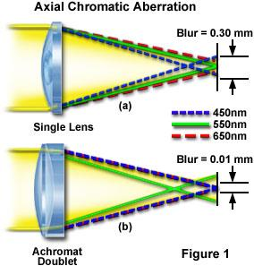
5.10.2 Coma
Coma affects off-axis point sources, which appear comet-shaped due to the different contributions of lens zones at different radial distances from the optical axis.
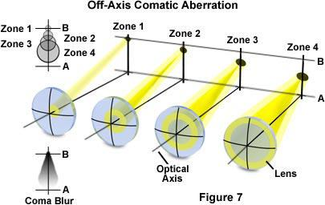
5.10.3 Astigmatism
Astigmatism arises when the lens focuses rays in the sagittal and tangential planes at different axial positions. Between the two focal planes lies a “circle of least confusion.”
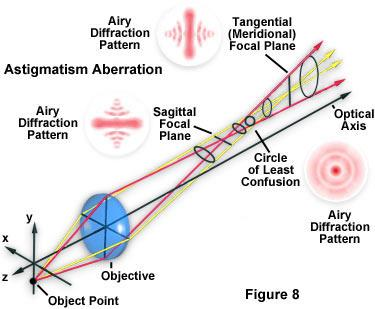
5.10.4 Field Curvature
A flat specimen is imaged onto a curved (Petzval) surface, so the center and edges of the field cannot be simultaneously in focus with a simple lens. “Plan” objectives correct this.
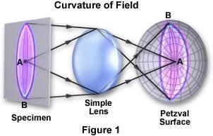
Chromatic aberration causes channel-dependent z-offsets — critical to correct for colocalization analyses. Field curvature means intensity is not uniform across the field — always flat-field correct before quantitative measurements. Both are dramatically reduced in Plan Apo objectives.
Textbooks
- Pawley, J. (ed.) Handbook of Biological Confocal Microscopy, 3rd ed. Springer (2006) — Chapters 2–4: detectors, noise, and dynamic range.
- Russ, J. The Image Processing Handbook, 7th ed. CRC Press (2016) — comprehensive reference on digital image processing for microscopy.
Key papers
- Huang et al. Video-rate nanoscopy using sCMOS camera-specific single-molecule localization algorithms. Nature Methods (2013). DOI — quantitative comparison of sCMOS vs. EMCCD for single-molecule imaging.
- Waters, J.C. Accuracy and precision in quantitative fluorescence microscopy. J. Cell Biol. (2009). DOI — noise sources, dynamic range, and quantification pitfalls.
- North, A.J. Seeing is believing? A beginners’ guide to practical pitfalls in image acquisition. J. Cell Biol. (2006). DOI — essential practical guide to avoiding common imaging errors.
Online
- MicroscopyU — CCD Cameras — illustrated guide to CCD and sCMOS architecture.
- Hamamatsu Learning Center — technical notes on camera selection, noise, and dynamic range.
- iBiology — Quantitative Imaging — video lectures on digital image acquisition and analysis.
Tools
- Fiji / ImageJ — open-source image analysis. Key plugins: Bio-Formats (file import), MTrackJ (tracking), Coloc2 (colocalization).
- CellProfiler — automated image analysis pipelines for high-content screening.
Exercises
- Download a sample fluorescence image stack from the Cell Image Library and measure: mean background, read noise (from dark frames), and signal-to-noise ratio for a labeled structure of interest.